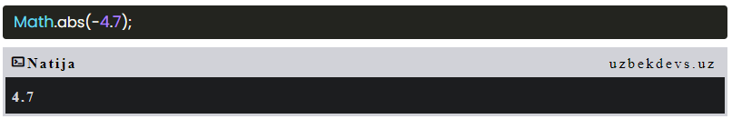

JavaScriptda Math obyektni raqamlar ustida matematik amallarni bajarishda yordam beradi.
JavaScript 8 ta matematik konstantalarni taqdim etadi, ularga Math xossalari sifatida kirish mumkin:
Math.pow(x, y) x qiymatini y darajasini qaytaradi:
Math.sqrt(x) - x ning kvadrat ildizini qaytaradi:
Math.abs(x) - x ning (musbat) qiymatini qaytaradi:
Satrning bir qismini ajratib olishning 3 ta usuli mavjud:
slice()satrning bir qismini chiqaradi va chiqarilgan qismini yangi qatorga qaytaradi. U ikki parametr qabul qiladi boshlang'ich nuqtasi va oxirgi nuqtasi.
Agar siz ikkinchi parametrni kiritmasangiz substring() satrning qolgan qismini kesib tashlaydi.
substr() funksiya slice() bilan o'xshash. Farqi shundaki birinchi parametr kesib olinadigan matn ni boshlang'ich indeksi ikkinchi paremetrga boshlang'ich indeksdan satr kengligini kesib oladi.
toUpperCase() funksiyasi belgilangan satrni katta harflarga o'tkazadi.
toLowerCase() funksiyasi belgilangan satrni kichik harflarga o'tkazadi.
concat()ikki yoki undan ortiq qatorlarni birlashtiradi:
Ushbu funksiya trim() satrning ikkala tomonidagi bo'shliqni olib tashlaydi:
Ushbu funksiya charAt() belgini satrdagi belgilangan indeks (pozitsiya) ga qaytaradi: